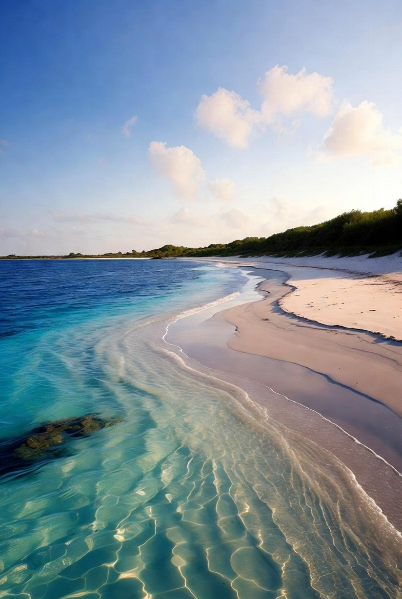
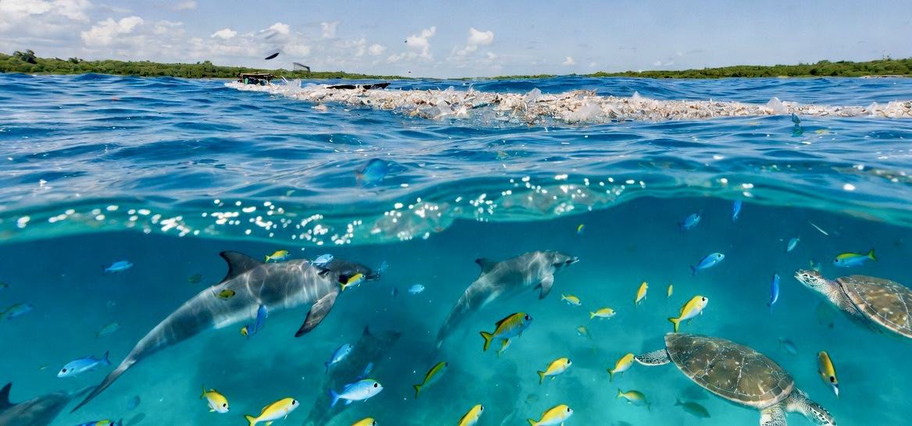
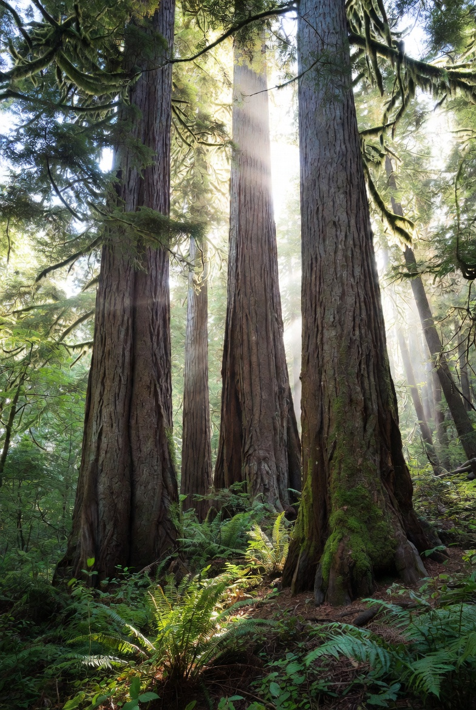

We focus on hope and practical action. Clean oceans, lakes, and rivers. Plant three trees for every one cut. Remove plastic from beaches and highways — together.
See Real Solutions
Communities actively removing plastic from our shores and waters.

The Ocean Cleanup technologies are deployed around the world as they conduct the largest cleanup in history. For over ten years, The Ocean Cleanup has been researching, extracting, and monitoring plastic pollution in oceans and rivers globally – with tens of millions of kilograms removed to date.

Planting three trees for every one removed.